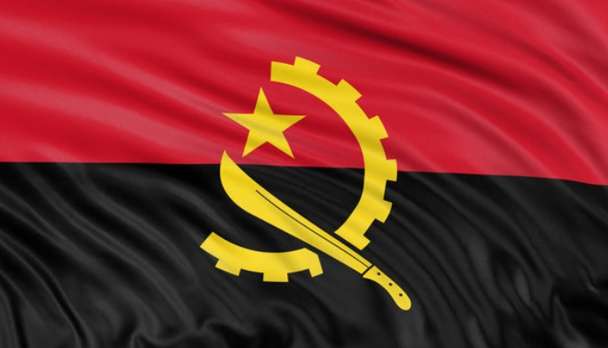
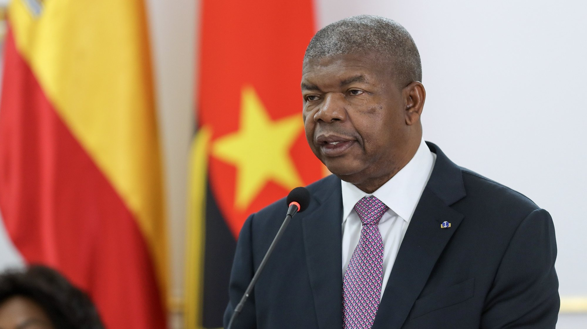
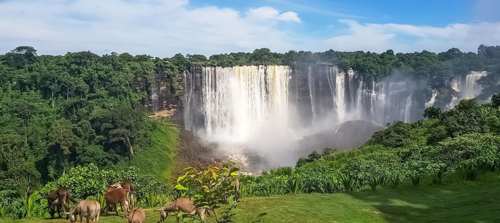
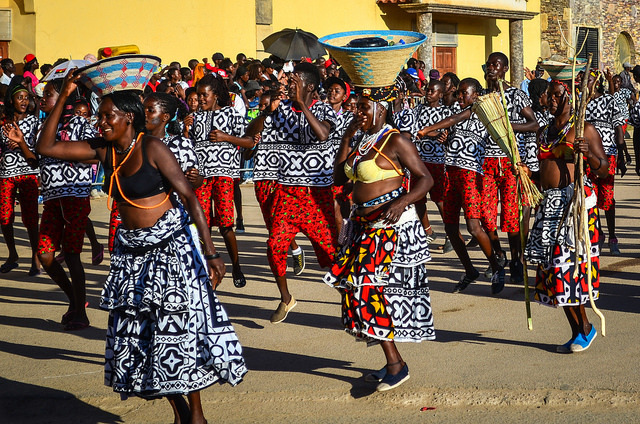

Contents

President
JOAO LOURENCO
Capital city
LUANDAAbout Angola
Angola is a country located in Southern Africa, bordered by Namibia, the Democratic Republic of the Congo, Zambia, and the Atlantic Ocean. Its capital city is Luanda, which is also the largest city and main center of government, trade, and culture.
Angola has a rich history influenced by African kingdoms and Portuguese colonial rule. It gained independence in 1975 after many years of struggle. Today, Angola is a republic with Portuguese as its official language.
The country is rich in natural resources, especially oil and diamonds, which play a major role in its economy. Fishing and agriculture are also important economic activities.
Angola has diverse landscapes, including coastal plains, tropical forests, and savannahs. It is home to many rivers and wildlife, especially in its national parks.
Culturally, Angola is known for its music and dance styles such as Kizomba and Semba, which are popular both locally and internationally. Traditional clothing, food, and festivals reflect the country's rich African heritage mixed with Portuguese influence.

- Luanda
- Capital and largest city, major economic and political center
- Huambo
- Important agricultural and transport hub.
- Lobito
- Major port city on the Atlantic Ocean.
- Benguela
- Known for trade and coastal location.
- Cabinda
- Rich in oil resources.
Cultures of Angola
Angola has a rich and diverse culture shaped by many ethnic groups, including the Ovimbundu, Kimbundu, and Bakongo peoples. Each group has its own traditions, languages, music, and customs, making Angola culturally very diverse.
The official language is Portuguese, but many local languages are also widely spoken across the country. Traditional beliefs are still practiced in some areas alongside Christianity, which is the dominant religion.
Music and dance are very important in Angolan culture. Popular styles include Semba, which is often seen as a predecessor of samba, and Kizomba, a smooth and romantic dance and music style that is popular worldwide. Drumming and rhythmic dancing are key parts of celebrations and festivals.
Angolan traditional clothing is often colorful and worn during cultural events and ceremonies. Modern fashion is also influenced by both African and Portuguese styles.
Food in Angola is rich and flavorful, often based on fish, beans, rice, cassava, and palm oil. Popular dishes include funge (a type of porridge) and grilled fish.
Family and community life are very important in Angola. Respect for elders, hospitality, and strong family ties are key values in society.


| Fact | Description |
|---|---|
| Location | Angola is located in Southern Africa along the Atlantic Ocean. |
| Capital City | The capital city is Luanda. |
| Independence | Angola gained independence from Portugal in 1975. |
| Official Language | Portuguese is the official language of Angola. |
| Natural Resources | Angola is rich in oil and diamonds. |
| Major Cities | Important cities include Luanda, Huambo, and Lobito. |
| Religion | Christianity is the main religion in Angola. |
| Geography | The country has beaches, savannahs, forests, and highlands. |
| Culture | Angola is famous for music and dance styles like Kizomba and Semba. |